|
v1.3.19
|
Loading...
Searching...
No Matches
|
v1.3.19
|

| Dependencies | NVIDIA CUDA 9.0+ |
|---|---|
| CMakeLists.txt | set( PLUGINS "radiation" ) |
| Header File | #include "RadiationModel.h" |
| Class | RadiationModel |
| Package | |||
|---|---|---|---|
| NVIDIA CUDA 9.0+ | Mac OSX:$ brew install Caskroom/cask/cuda | Use CUDA installer | Use CUDA installer |
For help choosing the correct CUDA toolkit version and accompanying OptiX version for your system, consult this page: Choosing the right CUDA and OptiX version
Useful OS-specific information for installing CUDA can be found here: Install and Set-up
If you are using a PC, it is likely you will need to increase the GPU timeout in the registry, otherwise calculations lasting longer than 2 secs. will timeout and kill your program. A guide on how to increase the timeout can be found here: Increasing graphics driver timeout
This model simulates the transport of radiative energy for arbitrary wavelength bands using a GPU-accelerated ray-tracing model. The model details are described in Bailey (2018). Briefly, the model uses a reverse ray-tracing approach to simulate emission from primitive elements, collimated radiation sources, and point radiation sources.
| Constructors |
|---|
| RadiationModel( helios::Context* context ) |
The RadiationModel class is initialized by simply passing a pointer to the Helios context as an argument to the constructor. This gives the class the ability to automatically query model geometry and read/write from/to model data.
| Primitive Data | Units | Data Type | Description | Available Plug-ins | Default Value |
|---|---|---|---|---|---|
| temperature | Kelvin | float | Primitive surface temperature. NOTE: Only needed if performing emission calculations. | Can be computed by EnergyBalanceModel plug-in | 300 K |
| reflectivity_* | unitless | float | Primitive reflectivity for band * (i.e., reflectivity for band 'PAR' would be 'reflectivity_PAR'). | N/A | 0 |
| transmissivity_* | unitless | float | Primitive transmissivity for band * (i.e., transmissivity for band 'PAR' would be 'transmissivity_PAR'). | N/A | 0 |
| emissivity_* | unitless | float | Primitive emissivity for band * (i.e., emissivity for band 'PAR' would be 'emissivity_PAR'). NOTE: Only needed if performing emission calculations. | N/A | 1.0 |
| twosided_flag | N/A | uint | Flag to determine whether a primitive should be treated as two-sided (=1) or single-sided (=0). See Sect. Area Basis for Calculating Fluxes below for more information. | N/A | 1 |
| Primitive Data | Units | Data Type | Description |
|---|---|---|---|
| radiation_flux_* | W/m2 | float | Absorbed radiation flux for band * (i.e., the flux for band 'PAR' would be 'radiation_flux_PAR'). |
The radiation model class contains functions and data associated with the model. To begin, declare an instance of the RadiationModel class. The class constructor takes one argument - a pointer to the Helios context. It uses this pointer to access model geometry and data in the context.
The ultimate outputs of the radiation model are absorbed radiative fluxes, which is the rate of radiative energy transfer per unit surface area. All flux calculations are on a per unit one-sided surface area basis. For planar primitive elements (patches and triangles), this means that the flux will be the rate of radiative energy absorption on both sides of the primitive, divided by the one-sided surface area of the primitive (i.e., that returned by the helios::Primitive::getArea() function).
By default, a planar primitive will emit and absorb radiation from/to both faces. For primitives that only emit and absorb from/to one face (e.g., ground primitives), this default behavior should be modified. Single-sided emission can be achieved by setting primitive data for the particular primitive with a name of "twosided_flag" to a value of 0 (where '0' is defined as an unsigned integer):
Note that in this case radiation will be emitted from the side with its face in the direction of the primitive normal vector. If primitive data called "twosided_flag" is set to 1, this will produce the default behavior of emission from both faces.
A primitive with "twosided_flag" set to 0 will not absorb any radiation from the back face of the primitive, but it will attenuate radiation. So if a ray hits the back face, the ray trajectory will be terminated, but no energy will be deposited.
Example: If we had a single patch and a diffuse radiation source with a flux of 1.0, with default behavior the absorbed flux on the patch would be 2.0 because it would absorb energy from both faces, but the end flux would be expressed on a single-sided area basis. If "twosided_flag" was set to 0 for that patch (non-default behavior), then the absorbed flux on the patch would be 1.0.
The end output of the radiation model is absorbed radiative fluxes for primitives or camera pixels for one or more wavelength bands. Radiative bands are defined by the total radiative fluxes emitted by any radiative sources, surface radiative properties integrated over the band (reflectivity, transmissivity, and emissivity). These source fluxes and surface radiative properties can be manually specified for each band, or can be automatically calculated based on spectral data input to the model.
Each wavelength band is given a label that is defined by the user (e.g., 'PAR'). Each band has the possibility of having components of direct, diffuse, and emission, each of which are specified when adding the band.
Radiation bands are defined in the model by calling the RadiationModel::addRadiationBand() method. At a minimum, the user must provide an arbitrary label for the band to be added (e.g., "PAR"), which will be used to reference it later. The actual value of the label does not matter - calling a band "PAR" for example doesn't mean anything itself, it's just a label.
When a band is added in this way, we will need to manually specify source fluxes and surface radiative properties. These values are what would actually make the band "PAR", or "NIR", or "shortwave", for example. We would set source fluxes and radiative properties consistent with that particular band.
If we have source flux spectral data, or surface spectral radiative properties, we can input this into the model and have it automatically calculate source fluxes and radiative properties. The procedure for actually inputting this spectral data is described in detail below, but in this case we need to specify the wavelength range for our band when we create it:
In the example above, we have defined our wavelength band as 400-700 nm. Thus, any spectral data input to the model will be integrated over this wavelength band to determine source fluxes and radiative properties.
Spectral data is comprised of data value pairs - a wavelength value paired with a response value (e.g., spectral flux, reflectivity, transmissivity). These wavelength-value pairs are represented using the helios::vec2 structure. Raw spectral data is stored as global data in the Helios Context as a vector of vec2's. The label of the global data can then be assigned to radiative sources or primitive data in order to map the spectral data to a given source or primitive.
Spectral data is usually read into the Context from an XML file, although it could be manually created within a program and stored as global data. The spectral data should be stored in an XML file as global data, consisting of many vec2 data point and a label string. An example might be as follows (although it will typically have many more values in a real use case). See the page on File I/O for more information about the specification of XML files in Helios.
In this example, we've specified the leaf spectral transmissivity at four wavebands - 300, 400, 500, and 600 nm. Note that wavelength values are always given in nanometers. The label "leaf_transmissivity" is important, as this would be used later to assign this transmissivity spectrum to one or more primitives.
The Helios radiation model has some pre-defined spectra in several XML files. These files are automatically copied into the project build directory under "plugins/radiation/spectral_data/". The file "surface_spectral_library.xml" has many surface reflectivity and transmissivity spectra; the file "light_spectral_library.xml" has several artificial light spectral flux spectra; the file "solar_spectrum_ASTMG173.xml" has the ASTM standard clear sky solar spectrum.
In order to get the spectral data into the Context as global data, the XML file containing the data must be loaded. This is done via the usual procedure:
This command would load all the surface spectra from the file "surface_spectral_library.xml" into the Context as global data. We could then access it in the usual way (see page on Global Data for details on Helios global data):
In the above example, we've retrieved the spectrum in the file "surface_spectral_library.xml" with the tag "grape_leaf_transmissivity_0000" and stored it into the vector "transmissivity". As an example, we looked up the wavelength and transmissivity at the first wavelength (index of 0).
Radiative properties (reflectivity, transmissivity, emissivity) are defined for each band for each primitive. Their reflectivity or transmissivity values can be set directly via primitive data, or they can be calculated from spectral data. The emissivity is always a constant and cannot be set from spectral data.
1. Setting reflectivity and transmissivity manually to a constant value for each band and primitive
By setting the value of primitive data "reflectivity_[*]" or "transmissivity_[*]", where "[*]" is the name of a radiative band that has been created, this sets a constant reflectivity or transmissivity value for the given band and primitive. And example is given below.
Note that absorptivity is not directly set, rather it is calculated as  . If is calculated to be negative or greater than 1, an error is thrown.
. If is calculated to be negative or greater than 1, an error is thrown.
If reflectivity or transmissivity primitive data does not exist for a primitive, a default value of 0 is assumed. If radiative properties are changed from default values, the number of scattering iterations needs to be increased from the default value of 0 (see Scattering Iterations). If radiative properties are changed, but the number of scattering iterations is set to the default value of 0, the modified radiative property values are overridden and set back to their default values (black surface).
2. Specifying reflectivity and transmissivity based on spectral data
Spectral reflectivity or transmissivity data can be associated with a primitive, such that the radiative properties for a given band can be calculated automatically. At a minimum, two things must be set in order for this to happen: a) the radiation band must have been created with a defined wavelength range (see above and method RadiationModel::addRadiationBand( const std::string&, float, float) ); b) primitive data with label "reflectivity_spectrum" and/or "transmissivity_spectrum" must be set for the primitive, and the value (a string) must reference a valid spectral dataset that has been loaded into the Context.
Below is a code example for specifying the reflectivity and transmissivity for a primitive based on spectral data. In this case, the model will assume the source spectral distribution is constant over all wave bands, and thus total reflectivity/transmissivity is just the integral of the spectral reflectivity/transmissivity. If there was a radiative source with a specified spectral distribution, the total reflectivity/transmissivity would be calculated by integrating the product of the reflectivity/transmissivity and source spectral intensity (example given for reflectivity only):
![\[ \rho = \dfrac{\int_{\lambda_{min}}^{\lambda_{max}}\rho_\lambda I_\lambda d\lambda}{\int_{\lambda_{min}}^{\lambda_{max}} I_\lambda d\lambda}\]](form_168.png)
Note that in the above example, we did not add a radiative source or set its spectral distribution.
By default, radiation emission calculations are performed for each band. Each primitive emits radiation with a flux of  , where
, where  is the primitive's emissivity, 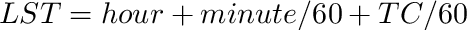 is the Steffan Boltzmann constant, and 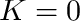 is the primitive's surface temperature in Kelvin. By default, it is assumed that 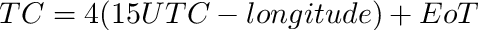, unless primitive data exists that defines the emissivity. By default, it is also assumed that
is the primitive's emissivity, 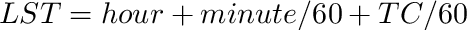 is the Steffan Boltzmann constant, and 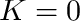 is the primitive's surface temperature in Kelvin. By default, it is assumed that 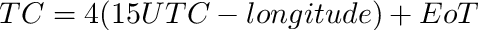, unless primitive data exists that defines the emissivity. By default, it is also assumed that  , unless the primitive data 'temperature' exists in the Context whose value defines the temperature.
, unless the primitive data 'temperature' exists in the Context whose value defines the temperature.
Emission can be disabled for the band by calling the disableEmission() function. For example, for the photosynthetically active (PAR) band, terrestrial objects do not emit radiation (i.e., 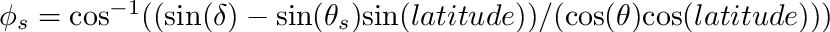) and thus rather than setting a zero emissivity for this band for all primitives, it is desirable to simply disable radiation emission for this band:
The surface emissivity can be changed similarly as was shown above for the reflectivity and transmissivity:
Note that you can also set the reflectivity and transmissivity for a band with emission. It is required that  in order to satisfy conservation of energy. If only the emissivity is set and reflectivity and transmissivity are left at their default values of 0, it is automatically assumed that 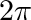 and 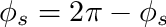.
in order to satisfy conservation of energy. If only the emissivity is set and reflectivity and transmissivity are left at their default values of 0, it is automatically assumed that 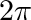 and 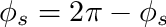.
There are six types of external sources of radiation that can be simulated: 1) a collimated radiation source (beams of radiation are approximately parallel), 2) a sphere with the same radius and distance as the sun, 3) a sphere with prescribed radius and position, 4) a disk with prescribed radius, position, and orientation, 5) a rectangle with prescribed size, position, and orientation, 6) ambient diffuse radiation with prescribed angular distribution.
It is critical to note that radiative source fluxes are specified as the flux perpendicular to the direction of the source. For a solar source, for example, this would be the flux on a plane perpendicular to the sun direction. This flux is of course different from what a sensor positioned horizontally would measure. One can convert between the two using the cosine of the solar zenith, but this becomes problematic when the sun is low in the sky. For this reason, it is recommended to use the SolarPosition plug-in to specify solar source fluxes, which can be matched to observations by tuning the atmospheric turbidity.

A collimated radiation source is defined by a unit vector pointing in the direction of the collimated source, and by the radiation flux emitted by the source normal to the direction of radiation propagation.
The radiation model also requires the specification of the number of rays per primitive to be used in the simulation (default is 100 rays per primitive). The more rays used in the simulation the more accurate the answer will be, but this will result in a longer simulation time.
Below is an example of adding a collimated source oriented in the direction of the sun, with a flux of 800 and using 200 rays per primitive:
The RadiationModel::addCollimatedRadiationSource() method can also be called with no argument, in which case it will set the sun direction to be vertical. It can also be called based on a helios::SphericalCoord.
To represent penumbral effects, a spherical radiation source can be used to represent the sun. The sun is represented by a sphere, which has the same diameter and distance from the earth as the sun.
The spherical sun source is defined in a similar manner as the collimated radiation source, but using the addSunSphereRadiationSource() function. Below is an example of adding a spherical sun source, with a flux of 800:
Spherical sources are added using the addSphereRadiationSource() function, which takes an (x,y,z) location of the spherical source and its radius as arguments. This function returns a uint which specifies the identifier for the point source, similar to a collimated and sun sphere source. The flux emanating from the surface of the source can also be set using the source identifier.
A disk radiation source emits directionally from one surface of a circular disk. Disk sources are added using the addDiskRadiationSource() function, which takes an (x,y,z) location of the disk source center, its radius, and its rotation as arguments. By default, the disk is horizontal and emits from its upper face. The rotation argument specifies the rotation angle in radians about its x-, y-, and z-axes. For example, to have a downward-emitting disk, the rotation would be ( 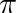, 0, 0). The flux emanating from the surface of the disk can also be set using the source identifier.
Adding a rectangular radiation source is nearly the same as adding a disk source, except that the horizontal and lateral dimensions of the source can be specified independently. As with the disk source, the rectangle is horizontal by default and emits from its upper face.
In the above examples, the source flux was specified directly for each band, and integrated surface radiative properties assumed the source flux spectral distribution was constant over the wave band. Optionally, users can specify a source spectral distribution by referencing a spectral distribution that has been loaded into the Context based on the procedure described above (Radiative Properties).
The RadiationModel::setSourceSpectrum() method sets the source spectral flux distribution, and takes two arguments: 1) The identifier of a radiative source (i.e., the output argument of the add[*]Source() call), 2) The label (string) of a spectral distribution that has been loaded into the Context.
The main difference between the spectral distribution data for radiative properties and for sources is that for sources each ".y" value in the spectral dataset is the spectral-hemispherical emitted flux at that wavelength (".x") in units of W/m2/nm.
An example of setting the source distribution based on the ASTMG173 standard solar spectral distribution is given below. Note that the ASTMG173 solar spectrum is automatically loaded by the radiation model. However, in general, the user needs to load an XML file containing the spectral data into the Context. For example,
This would allow for use of the "CREE_XLamp_XHP70p2_6500K" source flux spectral distribution, for example.
It is important to note that if a spectral flux distribution is specified for a source, the total flux emitted by the source for a given waveband will be calculated by integrating the source flux distribution over that band (provided a wavelength range was specified when calling the RadiationModel::addRadiationBand() function):
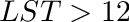
However, users typically want to change the integral of the source flux distribution dynamically throughout a simulation. This can be done using the RadiationModel::setSourceSpectrumIntegral() method. The user can either set the integral of the source flux spectral distribution across all wavelengths to a prescribed value. The source flux spectral distribution can also be scaled based on a prescribed integral between two wavelengths. For example, if only the total PAR flux was known, the entire solar source flux distribution could be scaled based on the integral from 400-700nm. When called, the RadiationModel::setSourceSpectrumIntegral() function properly normalizes the source spectral distribution, calculates radiative source fluxes for all bands through integration, then calls the RadiationModel::setSourceFlux() method for all bands based on the updated fluxes.
In order to be able to set the source spectrum integral, it is required that: 1) the source has been assigned a spectral distribution via the RadiationModel::setSourceSpectrum() method, and 2) bands should have been added with explicit wavelength bounds. If they were not, their fluxes will not be set based on the updated source flux integral.
A user may want to set the source integral based on only a subset of wavelengths contained in the entire spectrum. For example, if only the PAR (400-700nm) flux was known, the entire source flux distribution could be normalized to produce a given PAR flux.
Now that the source spectrum is set, it is no longer necessary to call RadiationModel::setSourceFlux(), because it will be automatically calculated by integrating the source spectrum. If RadiationModel::setSourceFlux() is called for a band, it will override any source spectra.
An ambient radiation source is added simply by setting its flux value:
The default is to use 100 diffuse rays per primitive, which can be set to a user-defined value using the following command:
By default, the diffuse radiation distribution is isotropic. An anisotropic diffuse radiation distribution can be utilized using the function setDiffuseRadiationExtinctionCoeff(). This function applies an anisotropic diffuse distribution in which intensity declines exponentially away from the peak direction (usually the solar direction). The relative diffuse intensity is given by (Harrison and Coombes, 1988)
![\[ f_d(\theta,\phi) = f_0\Psi^{-K},\]](form_179.png)
where
![\[ \Psi = acos\left( cos\,\theta\,cos\,\theta_s + sin\,\theta\,sin\,\theta_s\,cos\,(\phi-\phi_s) \right), \]](form_180.png)
and  and 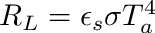 are the zenith and azimuth angles of the peak direction. If
and 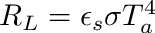 are the zenith and azimuth angles of the peak direction. If  ,
,  is clamped to a value of 1 degree. The
is clamped to a value of 1 degree. The  is a normalization factor that is computed such that the integral of
is a normalization factor that is computed such that the integral of  for a one-sided horizontal element is equal to 1, i.e.,
for a one-sided horizontal element is equal to 1, i.e.,
![\[ \frac{1}{\pi}\int\limits_0^{2\pi}\int\limits_0^{\pi/2}\,f_d\,\mathrm{cos}\,\theta\,\mathrm{sin}\,\theta\,d\theta d\phi = 1. \]](form_186.png)
The figure below shows the diffuse distribution for different values of  for a solar zenith of 45 degrees. Note that a value of
for a solar zenith of 45 degrees. Note that a value of  yields an anisotropic distribution, and as gets large the distribution becomes increasingly anisotropic.
yields an anisotropic distribution, and as gets large the distribution becomes increasingly anisotropic.

An example implementation is given below.
If the reflectivity or transmissivity are set to values greater than 0, scattering calculations are required to simulate the reflected or transmitted radiation transport. These scattering calculations are performed iteratively until there is no energy left to be scattered. The number of scattering iterations is defined using:
By default, the radiation model does not enforce any boundary conditions on the edge of the domain (other than being a diffuse ambient radiation source if one has been added). Optionally, users can specify to enforce a periodic boundary in the horizontal in either the x- or y-direction or both. This effectively means that the domain repeats indefinitely, and that any radiation leaving the domain on one boundary will re-enter the domain on the opposite boundary. This is useful for eliminating domain edge effects.

A periodic boundary condition is specified using the enforcePeriodicBoundary() function. The argument to this function is the lateral boundary that should be considered periodic: one of "x" (periodic in x-direction), "y" (periodic in y-direction), or "xy" (periodic in both x- and y-directions).
Note that it is very important that no primitives extend laterally beyond the ground surface, otherwise the periodic boundary will lie beyond the lateral extent of the ground and there will potentially be ambient radiation that enters the domain from below. If there is a chance that primitives may laterally extend beyond the ground, it is recommended to use the Context::cropDomain() function to crop the domain in the horizontal to the size of the ground.
Simulated cameras can be added to the domain in order to measure radiative fluxes and produce simulated images (with annotations if desired).
A radiation camera is defined by the properties given in the two tables below. The first set of parameters gives the camera's extrinsic properties that determine where the camera is located, how it is oriented, and how it numerically samples the domain.
| Parameter | Data Type | Description |
|---|---|---|
| camera_position | vec3 | Cartesian (x,y,z) position of the center of the camera lens. |
| camera_lookat | vec3 | Cartesian (x,y,z) position that the camera is looking directly at (i.e., a line perpendicular to the lens will pass through camera_position and camera_lookat). |
| antialiasing_samples | uint | Number of ray samples launched per camera pixel. |
The set of parameters given in the table below define a camera's intrinsic parameters that determines how it captures images. Each of these values are member variables of a parameters structure called CameraProperties.
| lens_diameter | float | Physical diameter of the camera lens. |
| focal_plane_distance | float | Distance from the camera lens to the focal plane (at this distance from the camera, all objects will be in focus). |
| HFOV | float | Angle of the horizontal camera field of view in degrees. |
| FOV_aspect_ratio | float | Ratio of horizontal to vertical camera field of view. |
| camera_resolution | int2 | Number of camera pixels in the horizontal and vertical directions. |
The last thing to define before adding a camera is which radiation bands the camera will detect. This is specified via a vector of strings, with each element corresponding to the label for a radiation band that has been added from the RadiationModel::addRadiationBand() method. Note that if a camera band was never added, an error will be thrown. Each camera band will correspond to a channel of the camera image.
Once all these parameters have been defined, we can add a camera to the simulation using the RadiationModel::addRadiationCamera() method. The first argument to this method is an arbitrary label string (e.g., "thermal", "multispec", "mycamera") that will later be used to reference the camera. Example code is given below.
This will add a 3-band RGB camera, and assumes that radiation bands with labels "red", "green", and "blue" have been added based on a call to RadiationModel::addBand().
By default, it is assumed that the spectral sensitivity is 100% across all wavelengths. This is not the case for any real camera, as sensitivity of the sensor usually varies greatly with wavelength as shown in the image below. We need to set the spectral response of each camera channel. This can be done using the RadiationModel::setCameraSpectralResponse() method. Three arguments must be provided: 1) the label for the camera to be set (first argument to the camera adder method), 2) the label for the camera channel (e.g., "red", "PAR", etc.), and 3) the label for global data in the Context containing spectral response data. The 3rd point is similar to how spectral data is specified for sources and radiative properties - a vector of wavelength and intensity values.

Inputting raw measured surface spectra and camera spectral response specified by the manufacturer will typically result in simulated camera images that look quite different from those of the real camera due to errors in measurements, internal camera corrections, and lens effects. As such, a calibration is generally needed to achieve acceptable image results.
Pre-calibrated camera responses are available for a few cameras and light source combinations to use when direct calibration data is not available. These are for a Nikon B500 camera with the ASTMG173 solar spectrum or CREE 6500K LED. These calibrated camera spectra can be found in the included camera spectral library ("plugins/radiation/spectral_data/camera_spectral_library.xml") and has labels "calibrated_sun_NikonB500_spectral_response_[*]" or "calibrated_CREE6500K_NikonD700_spectral_response_[*]", where [*] is one of "red", "green", or "blue". These calibrated camera spectra can be used in place of the raw camera spectral response data, as illustrated below:
By convention, the intensity spectra all sources other than the sun are normalized to 1.0. So when using camera calibrations based on these types of sources, you should set the source fluxes for each radiative band equal to 1.0. For solar sources, set the source flux for each band equal to the total solar flux integrated over all wavelengths.
When using a calibrated camera spectral response, you should set the source flux equal to 1.0 for all bands. This is because the calibrated camera spectral response is calibrated based on the actual intensity of the light source.
Ideally, a camera calibration should be performed for the particular camera and lighting conditions of your scene. The color calibration is performed using real images taken of a DKK Color Calibration Chart (DGK Color Tools). Steps for calibration are as follows:
1. Collect one or more images of the color calibration card using the desired camera. It is best to use lighting conditions similar to what will be simulated using the radiation model.
2. Extract normalized (0-1) pixel values for each channel of the camera image, and for each color patch on the color calibration card. Currently, this is a manual process, and can be done using a variety of approaches such as using the built-in color picker on Mac, or the color picker on PC. These utilities typically give 8-bit color values between 0 and 255, and thus you should divide the resulting color values by 255 to normalize them. It is best to increase the averaging size (or aperture) of the color picker to as large as possible such that it will still fit inside a single square in the color card image. Values should be specified as a 2D vector, where the first index is the channel of the image, and the second index is a vector of 18 elements giving the normalized color value for each color patch on the board for that channel following the pattern shown in the image below. The code for entering the patch values is also given below.

It is preferable to use more significant digits for the color values for increased precision. The above example used only two significant digits for simplicity.
3. Set up the scene in Helios based on the geometry, radiative conditions, and camera(s) that will be present in the simulations. You must specify the spectral distribution of any radiation sources using RadiationModel::setSourceSpectrum(), and specify an initial guess for the camera channel spectral distribution(s) using RadiationModel::setCameraSpectralResponse().
4. Add a simulated color calibration board to the scene. You can add the default color board (DGK Color Tools DKK Color Calibration Chart) using the method CameraCalibration::addDefaultColorboard(), or a custom color board CameraCalibration::addCustomColorboard().
Before simulations are run, we must update the context geometry within the radiation model using the updateGeometry() command. The geometry update can be somewhat costly, so it should only be done whenever geometry changes.
Simulations for each band are run separately via the runBand() command:
The model will create several primitive data in the context with values set using simulation results (see Sect. "Output Primitive Data" above).
A common task when using the radiation model is to integrate with the SolarPosition plug-in to set the position of a collimated radiation source (i.e., the sun), potentially at several different times of the day. In this case, one would initialize the SolarPosition and RadiationModel classes and set up relevant inputs, then execute a for-loop over each time of the day. For each time iteration, the current time is set in the Context, the direction of the sun is calculated for that particular time, then the sun direction is passed to the radiation model. An example is illustrated in the code below.
Visualization of radiation model outputs is typically achieved by coloring primitives based on the value of the primitive data "radiation_flux_*" for a particular band. However, we could visualize any input or output of the model or calculated value based on the model outputs.
A simple example of visualization of the absorbed flux for band "PAR" is given below, which assumes that a band exists named "PAR" and the model was run for that band.
It could also be possible to visualize the net all-wave radiation flux by summing multiple band fluxes. The following example assumes that there are bands created in the model for shortwave radiation called "SW" and for longwave radiation called "LW", and that the model has been run for each of these bands.
While visualizations provide an overview of the spatial distribution of radiative fluxes, the ultimate goal of radiation simulations is usually to integrate over some region in order to calculate aggregate fluxes and related quantities. There are many examples of such integration, such as calculating the fraction of incoming radiation intercepted by the canopy, or calculating the overall fraction of sunlit leaf area.
There are many functions in the Context to help with aggregating primitive data, which can be utilized to easily calculate these integral quantities. The code below gives an example of calculating the total canopy and ground radiation absorption, and the associated fraction of radiation interception. To calculate the total radiation absorption for the canopy or ground, we can separately sum the product of the primitive absorbed flux and surface area. This would give the total rate of radiation absorption (in Watts) for the canopy and the ground. The Context method helios::Context::calculatePrimitiveDataAreaWeightedSum() can do this calculation for us, given a vector of UUIDs corresponding to leaf or ground primitives. This is illustrated below.
The above example assumes that we have already added some geometry to the Context, separated leaf and ground UUIDs, and declared and set up the radiation model. For a full example, see Tutorial 10.
Simulated camera data can be written to file as a JPEG image, or the raw pixel data can be queried from the Context.
JPEG images are written either as a grayscale image (1 spectral band) or and RGB image (3 spectral bands) using the RadiationModel::writeCameraImage() method. This method takes three required arguments and two optional arguments: 1) a string denoting the label of a camera that was added through the RadiationModel::addRadiationCamera() method, 2) a vector of strings denoting the label(s) of radiation bands to be written to the image(s), which must contain exactly 1 element (grayscale image) or 3 elements (RGB image), and 3) a string denoting the base of the image filename, which may be appended with information like a radiation band label or frame count. The two optional arguments are: 1) the relative path to the directory where the images should be stored, and 2) a numerical integer identifier to be appended to the image file name (e.g., "camera_thermal_00001.jpeg"). Note that this value must be less than or equal to 99,9999. By default, images are stored in the directory where the executable is being run (usually the build directory), and the numerical identifier is omitted unless a value is provided.
Below is example code of writing an RGB image (3 spectral bands).
The above code would produce an image in the build directory called "camera_visible_myimage.jpeg", which is shown below, along with a file labels.txt that contains the primitive data labels for each pixel.